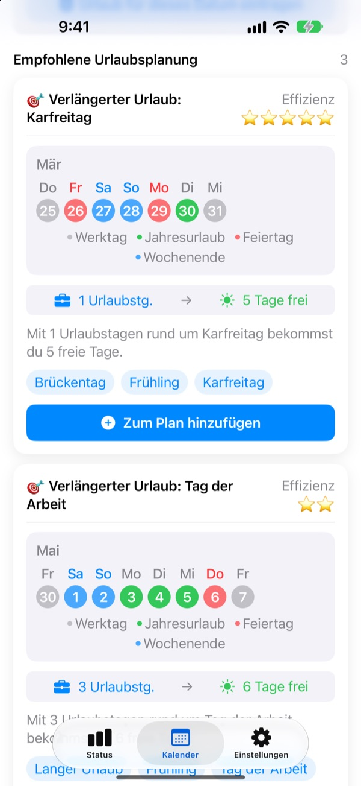
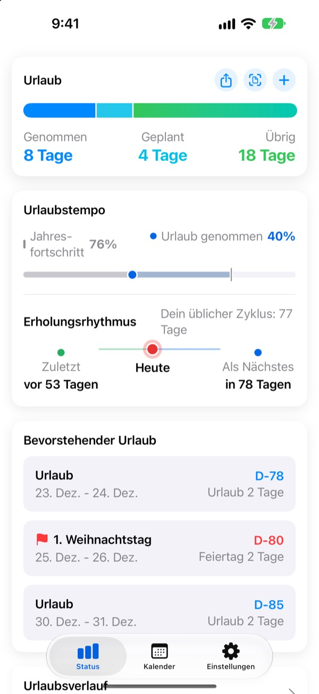
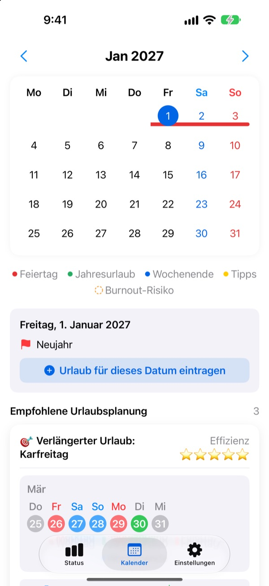
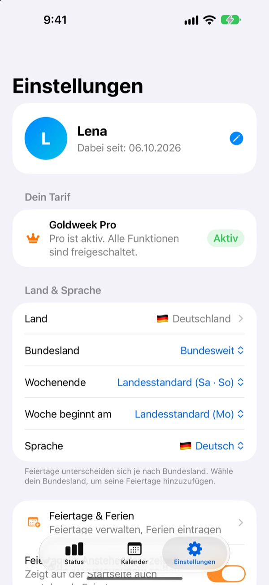

Wenige Urlaubstage,
lange Auszeiten
Goldweek verbindet Feiertage mit Wochenenden und zeigt genau, an welchen Tagen du Urlaub nehmen solltest, um am längsten frei zu haben. Kein Durchblättern und Zählen im Kalender mehr.
Kostenlos laden. Urlaubskonto und Vorschläge bleiben gratis.

Wie weit reichen deine Urlaubstage?
Wähl, wie viele Urlaubstage du nehmen kannst. Du siehst die längsten Auszeiten, die sie rund um die nächsten Feiertage ergeben.
Keine Lust mehr, Tage im Kalender zu zählen?
Donnerstag ist Feiertag, also den Freitag nehmen? Oder lieber für das lange Wochenende nächsten Monat aufheben? Nach genug Blättern nimmst du irgendeinen freien Tag, und im Dezember verfällt der Resturlaub. Goldweek übernimmt das Zählen und zeigt dir die Tage, mit denen dein Urlaub am weitesten reicht.
Dein Urlaub auf einen Blick
Gesamt, genommen, übrig: alles auf einem Bildschirm. Daneben siehst du, wie weit das Jahr schon ist und wie viel Urlaub du verbraucht hast, so merkst du sofort, ob du zu viel aufsparst.
Resturlaub und anstehende freie Tage zeigt ein Widget direkt auf dem Home-Bildschirm.

Urlaub direkt im Kalender eintragen
Feiertage, Urlaub und vorgeschlagene Brückentage erscheinen farbig im Kalender. Tipp auf ein Datum, um Urlaub einzutragen oder zu ändern, auch halbe, Viertel- und stundenweise Tage.
Vergangenen Urlaub übernimmst du auf einmal aus einem Foto deiner Urlaubsübersicht.

Dein Land, deine Arbeitszeit
Feiertage aus 42 Ländern, von Deutschland, Österreich und der Schweiz bis Asien und Amerika. Wo Feiertage je nach Bundesland oder Region abweichen, wählst du deins. Dein Land fehlt? Trag die Feiertage selbst ein.
Auch Wochenendtage, den ersten Wochentag sowie feste Arbeitszeit, Teilzeit oder Schichtarbeit kannst du festlegen.

In drei Schritten startklar
- 1
Sag, wo du arbeitest
Beim ersten Start wählst du dein Land und wie viele Urlaubstage du im Jahr hast.
- 2
Wähl einen Vorschlag
Im Tab Kalender findest du Vorschläge und übernimmst die, die dir gefallen.
- 3
Trag deinen Urlaub ein
Tipp auf ein Datum oder übernimm alten Urlaub per Foto.
So wird gerechnet
- Ganzer Tag
- 1 Tag vom Urlaubskonto
- Halber Tag
- 0,5 Tage
- Vierteltag
- 0,25 Tage
- Stunden
- Nach deiner Arbeitszeit an diesem Tag
- Krankheit, Sonderurlaub, Dienstreise
- Zählt nicht gegen dein Urlaubskonto
- Bonusurlaub
- Zusätzliche freie Tage wie Ausgleichstage, getrennt erfasst mit Ablaufdatum (Pro)
Deinen Jahresurlaub und den Monat, in dem dein Urlaubsjahr beginnt, änderst du jederzeit in den Einstellungen.
Gut erholen ist gratis. Die Planung übernehmen Plus und Pro.
Gratis
- Ganze, halbe, Viertel- und Stundentage samt Resturlaub
- Feiertage aus 42 Ländern, eigene Feiertage und Ferien
- Alle Vorschläge für dieses Jahr sehen, bis zu 3 übernehmen
- Hinweise zu Erholungsabständen, Erinnerungen und Widget
- Urlaub per Foto eintragen
- iCloud-Backup und mit der Familie geteilter Kalender
Plus und Pro
- Plus: Optimaler Jahresplaner
- Plus: Unbegrenzt Vorschläge, auch für letztes und nächstes Jahr
- Plus: Urlaub in deine Kalender-App übertragen
- Pro: Alles aus Plus, Bonusurlaub, Jahresgrenzen und Übertrag je Urlaubsart
- Pro: Schulkalender importieren, Kalender automatisch erkennen
- Pro: Gemeinsam frei und Familienjahrestage
Jede Stufe gibt es als Jahresabo oder als einmaligen Kauf auf Lebenszeit.
Jahresabos verlängern sich automatisch, wenn du sie nicht spätestens 24 Stunden vor Ablauf kündigst. Verwalten kannst du sie jederzeit unter Einstellungen > Apple Account > Abonnements.
Häufige Fragen
Mein Urlaubskonto stimmt nicht.
Prüf in den Einstellungen, in welchem Monat dein Urlaubsjahr beginnt und wie viele Urlaubstage du insgesamt hast. Halbe (0,5) und Vierteltage (0,25) werden automatisch abgezogen, und Arten, die nicht zählen, etwa Krankheit, Sonderurlaub oder Dienstreisen, ändern das Konto nicht. Stimmt es dann immer noch nicht, schreib uns.
Mein Urlaub erscheint nicht im Kalender.
Stornierter Urlaub wird im Kalender nicht angezeigt. Prüf den Status des Eintrags in der Urlaubsverwaltung. Oft hilft auch ein Update auf die neueste Version.
Wie trage ich Bonusurlaub ein?
Tipp im Tab Status auf +, um die Urlaubsverwaltung zu öffnen, und nutz unten den Bereich Bonusurlaub. Wähl eine Art (etwa Ausgleichstage, Prämienurlaub oder Erholungsurlaub), gib die Anzahl der Tage und auf Wunsch ein Ablaufdatum ein. Bonusurlaub wird getrennt vom regulären Urlaub geführt.
Ich habe gekauft, aber nichts ist freigeschaltet.
Tipp unten im Tab Einstellungen auf Kauf wiederherstellen. Dein Kauf wird mit dem Apple Account wiederhergestellt, mit dem du im App Store angemeldet bist. Hilft das nicht, schreib uns.
Sind meine Daten weg, wenn ich die App lösche?
Deine Daten liegen auf dem Gerät, beim Löschen der App sind sie also endgültig weg. Schalte das iCloud-Backup ein, damit du eine Kopie zum Wiederherstellen hast.
Kann ich eigene Feiertage hinzufügen oder welche ausblenden?
Ja. Unter Feiertage & Ferien in den Einstellungen fügst du eigene Feiertage hinzu oder blendest Standardfeiertage aus.
Welche Länder werden unterstützt?
Goldweek kennt die Feiertage von 42 Ländern. Wähl in den Einstellungen dein Land (und, wo Feiertage abweichen, dein Bundesland oder deine Region), und der Kalender passt sich sofort an. Fehlt dein Land, trag die Feiertage selbst ein oder wünsch es dir per Feedback aus der App.
Wo werden meine Daten gespeichert?
Was du eingibst, bleibt auf deinem Gerät oder in deiner eigenen iCloud. Wir erhalten nur anonyme Nutzungsstatistiken, anonyme Absturzberichte und Feedback, das du uns selbst schickst.
Für alles, was oben nicht beantwortet ist, für Ideen oder Fehlermeldungen schreib an leeo@kakao.com. Wir antworten meist innerhalb von ein bis zwei Werktagen.